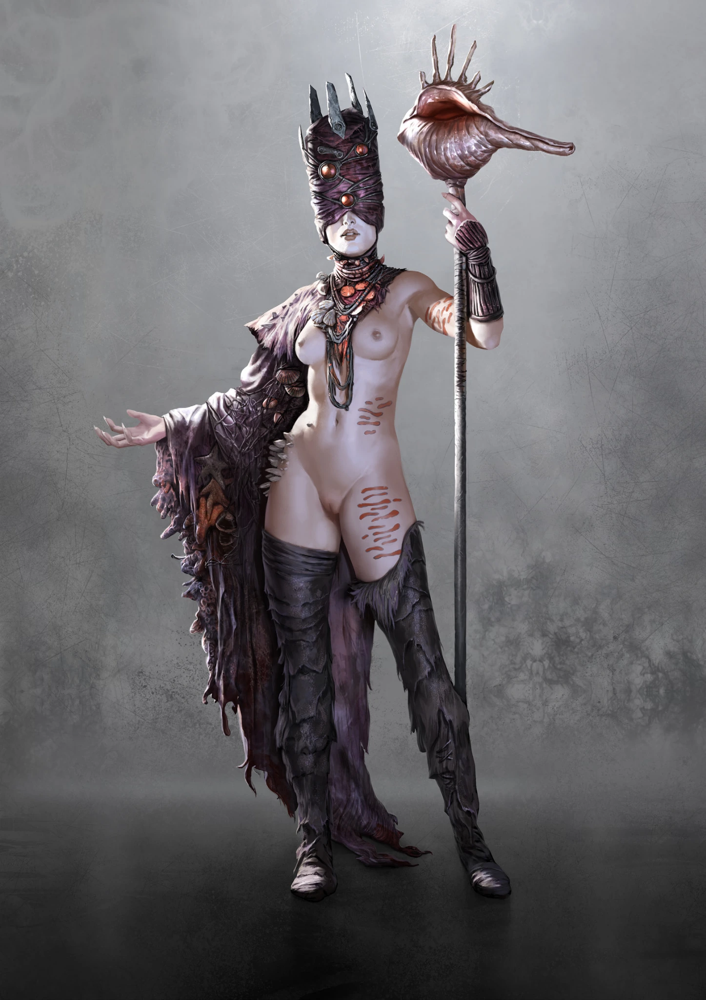
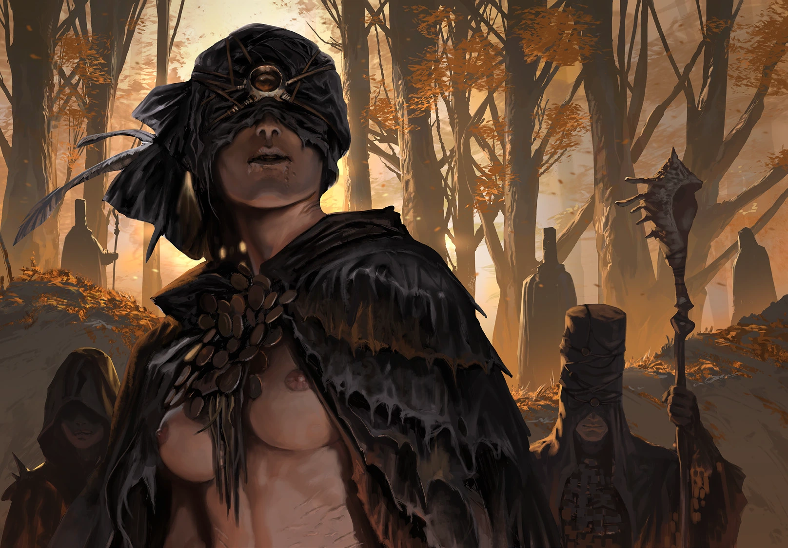

Primal
Pregnoctics experience time as an ocean of possibilities rather than a line. Their bodies are temporary buoys from which consciousness looks into past and future, storing what it learns in people, bark, shells, and places.
HYBRISPANIA · FOURTH RAPTURE
Beyond Time
KatharSys pp. 307–311

RAPTURE
Pregnoctics experience time as an ocean of possibilities rather than a line. Their bodies are temporary buoys from which consciousness looks into past and future, storing what it learns in people, bark, shells, and places.
When de-spored they are trapped in the present. Those who have abandoned ordinary sight can become helpless until returned to water, spore fields, or the collective perception of their Rapture.
Ancient aquatic creatures answer them. Shells and byssus threads divide rivers and coasts into territories and become containers for memory, warning, and prophecy.
KNOWN PHENOMENA
Commands aquatic invertebrates that cling to intruders, weigh them down, block boats, and divide waterways into controlled borders.
Allows the Game Master to reveal future possibilities or past events through the Pregnoctic’s visions.
Slows subjective time and raises Passive Defense for several Rounds.
Drags a victim through a storm of alien memory and emotion that inflicts Ego damage.
Rewinds or skips initiative moments, choosing a more favorable branch of immediate possibility.

VARIANTS
VARIANT: ENIGMATE
Feared prophets whose guidance protects Hybrispanian communities, though the price of their visions is whispered about in missing children and stolen years.
PROFILE: ENIGMATE INITIATIVE: 5D / 12 Ego Points SPORE INFESTATION: 14/14 SPECIALTY: INT+Legends 14D ATTACK: Shell staff, 6D, Special: When a blow hits the target, the shell or the snail’s house at the tip shatters into a cloud of splinters causing (4) Damage to all attackers within a (2) m radius. If at least (1) point of Damage pierces armor, the victim is assaulted by strange memories that confuse him and cause -2D to all Action rolls until the end of combat. After this attack, the shell staff is just a common staff: 6D, Distance 2 m, Damage 4, Blunt. DEFENSE: Passive 2 (Precognition) Melee active (Block), Melee 6D Ranged Combat active – Mental 7D (No effect in Primal phase) MOVEMENT: 6D ARMOR: None, Armor 0 CONDITION: 12 (Trauma: 7)
VARIANT: MNEMONID
Wandering, shell-encrusted travelers that evade hunters through precognition and carry sticky byssus weapons.
PROFILE: MNEMONIDE INITIATIVE: 12D / 12 Ego Points SPORE INFESTATION: 10/10 SPECIALTY: BOD+Stamina 8D, INS+Perception 9D ATTACK: Shell-clad arm, 8D, Distance 1 m, Damage 5, Blunt; Byssus whip, 9D, Distance 4 m, Damage Special: shells worn on the arms open up and uncoil byssus threads that are several meters long. A hit by one of these causes 1D+3 Damage. The threads tear loose, and the victim additionally suffers -2D to his next Action, because the sticky byssus impedes his movement. The Mnemonid can attack at least (4) times with the byssus whip before there are no longer enough threads for another attack. They grow back within a few days. DEFENSE: Passive 3 (Precognition) Melee active (Block), Melee 8D Ranged Combat active – Mental 2D (No effect in Primal phase) MOVEMENT: 10D ARMOR: Shell armor, Armor 3 CONDITION: 14 (Trauma: 7)
VARIANT: NODE
Extremely powerful anchors of the Primer whose soul worlds trap visitors inside archetypal conflicts and impossible currents of time.
PROFILE: NODE INITIATIVE: 12D / 12 Ego Points SPORE INFESTATION: 24/24 SPECIALTY: CHA+Negotiation 9D, INT+Legends 20D ATTACK: Staff, 6D, Distance 2 m, Damage 5, Blunt DEFENSE: Passive 4 (Precognition) Melee active – Ranged Combat active – Mental 8D (No effect in Primal phase) MOVEMENT: 14D ARMOR: Shell crown, Armor 0 CONDITION: 16 (Trauma: 8) SPECIAL EQUIPMENT: Shell necklaces (experiences and knowledge are stored within the shells, if the Node opens a shell and breathes in the gossamer floating within, she can learn any Skill with an Action score of 10D, including combat Skills. The inhaling takes 1 Action). ALLIES: A Node is surrounded by legendary Guerreros or Scourgers caught in their soul world. The warriors act and react archetypically for their Concepts: the “Conqueror” sees the characters as a fortress to be razed, the “Zealot” destroys those who do not share his perspective of the world, the “Hermit” sees the characters as the only threats to his salvation.